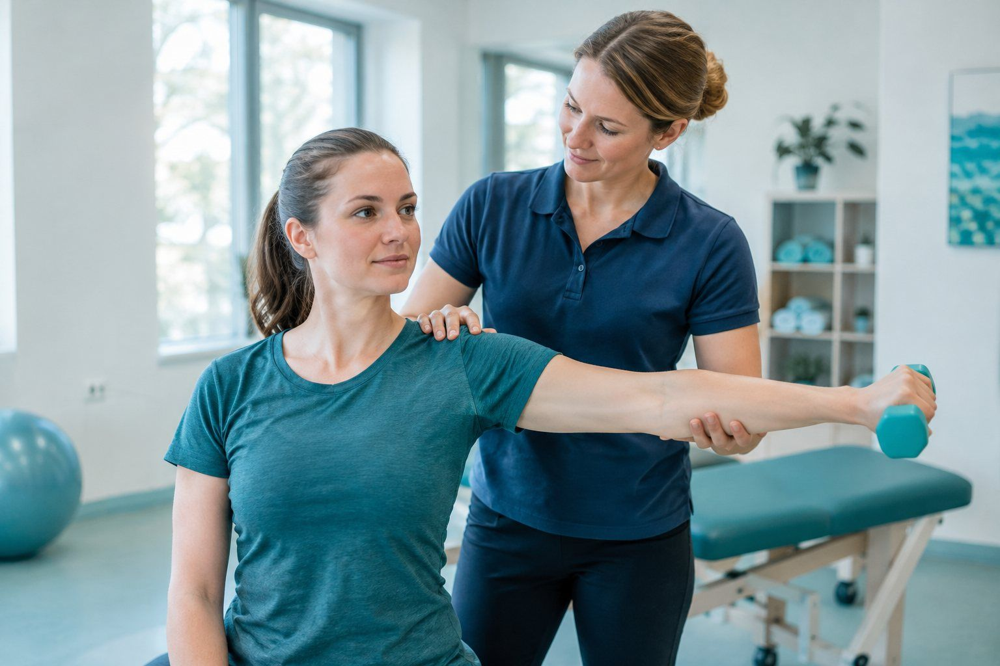
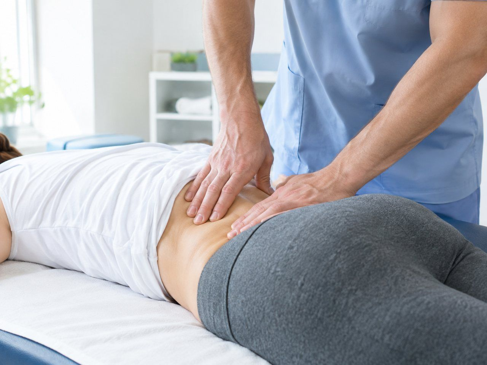

Un bilan complet, un programme adapté et un suivi régulier. On vous explique chaque geste pour que vous soyez acteur de votre guérison.

Lombalgies, cervicalgies, sciatiques : un bilan, puis un programme.
Genou, épaule, hanche : on reprend en douceur après l'opération.
Tendinites, douleurs liées au travail ou au sport.

Par téléphone ou en ligne, avec ou sans ordonnance selon le soin.
Un bilan de 45 minutes pour comprendre votre situation.
Des séances régulières, des exercices à faire chez vous.